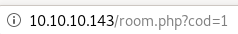
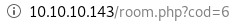
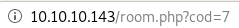

- nmapAutomator
- gobuster
- initial foothold
- manual sqlinjection (Blind SQL injection)
- Error based Blind SQL Injection
- revshell.php
- Exploit the SQL injection to add php code into a file on the system
- reverse shell
- sqlmap
- privesc to pepper
- privesc to root
- user/root
- lessons learned
initial foothold
this is the front page of our victim webserver
navigating through home, Rooms and Dining & Bar we see
Rooms link redirects you to
 and naviagting to a room
and naviagting to a room we see we have 6 types of rooms and clicking the “book now” button sets cod equal to the room number
 
a simple way to find out how many columns this database has is to simply increment the cod value until nothing gets returned on the webpage


now that we know there are only 6 entries in the database